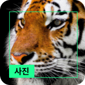

활동
인공지능 분류하기
우리 주변에서 인공지능이 인식할 수 있는 것을 생각해 보고,
어떤 정답을 맞히는 인공지능에 해당하는지 내 생각을 적어 봅시다.
글상자를 이용하여 생각을 적어 보세요.
인공지능은 사진, 글자, 영상, 소리 등 다양한 것들의 정답을 맞힐 수 있어요.
어떤 종류의 인공지능이 있는지 생각해 보세요.
보기
인공지능이 인식할 수 있는 것을 생각해 봅시다.
